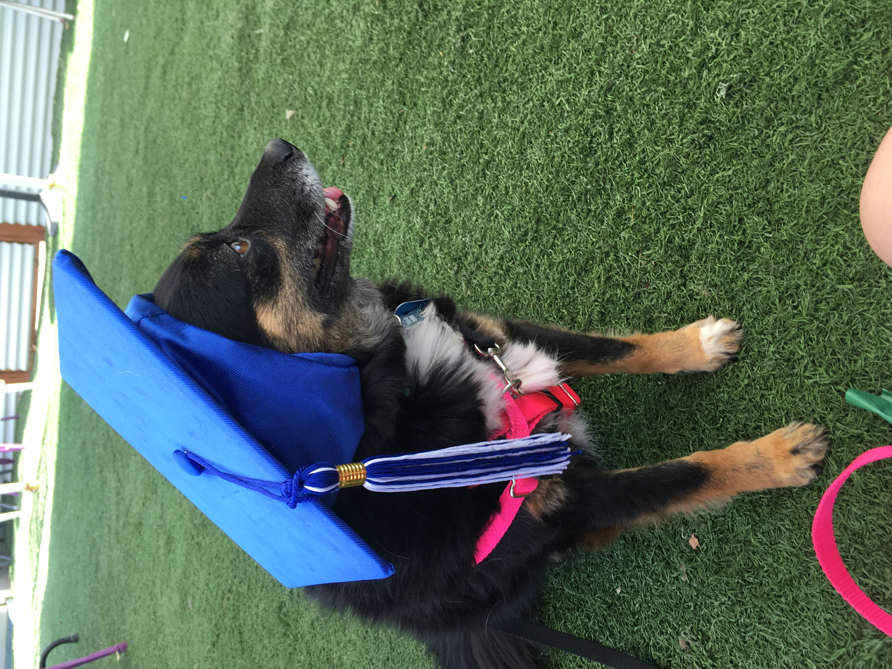
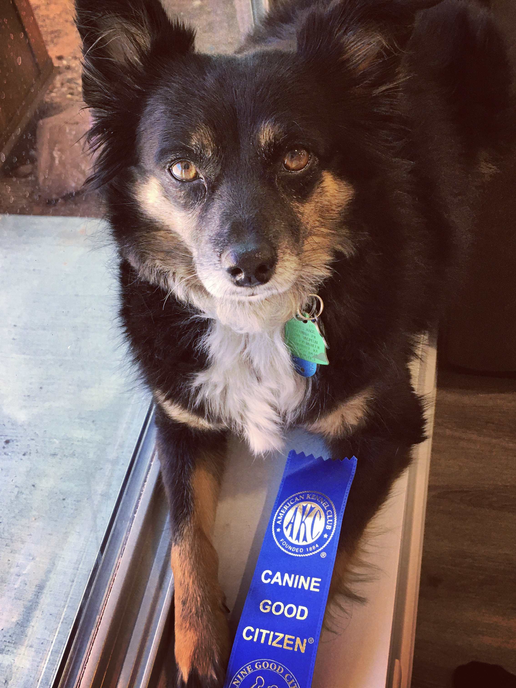

Skip to Main Content
Open Slideshow
About Me
(current)
> About Kenai
My Hometown
Hiking and Traveling
Meet Kenai!
This is my dog Kenai (pronounced kee-nai)! She is named after a national park in Alaska.
She is 7 years old.
She was 4 when I adopted her.
She loves the outdoors.
She loves hiking.
This is her best friend, Charles, the giant teddy bear.
Kenai loves to be a unicorn. She gets very excited when she gets to wear her costume.
She will sleep anywhere.
She loves working out.

She's a proud graduate of dog school.
Sadly, she likes trash.

She is a certified, Canine Good Citizen!
She often likes to stick her tongue out while she sleeps.
She loves camping.
She's a little clingy.
She loves squirrel watching.
She loves helping me sew.
She does not love wearing the cone of shame.
×
1 / 18
2 / 18
3 / 18
4 / 18
5 / 18
6 / 18
7 / 18
8 / 18
9 / 18
10 / 18
11 / 18
12 / 18
13 / 18
14 / 18
15 / 18
16 / 18
17 / 18
18 / 18
❮
❯